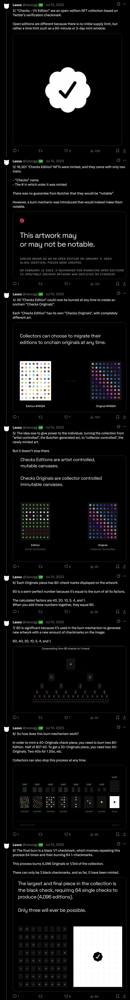
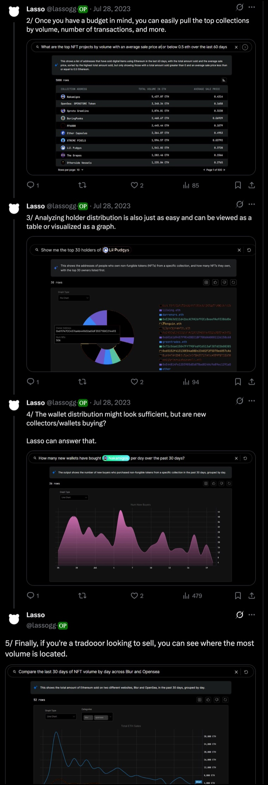
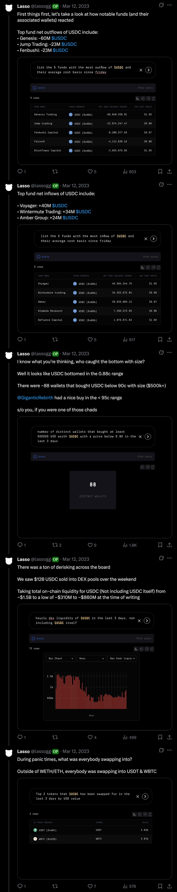

Case study — Lasso.gg
Growing an AI-Web3 platform's users by 200%.
Lasso.gg not only wanted more users to be aware of their product, but to understand how they could use it.
We wanted to tap into relevant projects to reach an already established audience to generate awareness, while also highlighting how our product worked.

The "Checks — VV Edition" thread: the drop, the burn mechanic, and why 80 is a semi-perfect number.

A live product demo: pulling top collections by volume, holder distribution, and new-wallet activity from a single query.

Turning a live de-risking event into real-time analysis: fund flows, bottom-buyers, and where the liquidity went.